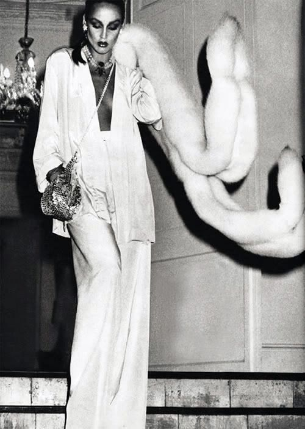
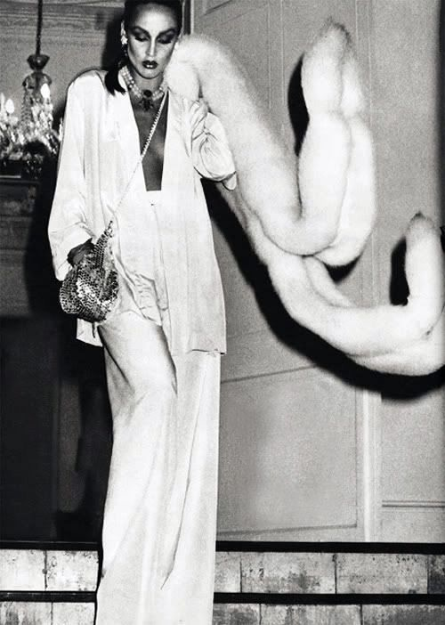

Throughout the 1960s the Civil Rights Movement was in motion, calling for equilibrium of the races. This fight carried over into the 1970s and was highlighted in the music.
The tribulation of this issue could be seen in songs like the 1971 Marvin Gaye hit, What's going on, with lyrics which go "picket lines and picket signs don't punish me with brutality." These lyrics explicitly place emphasis on the issues at hand but Disco took a different take on the issue, focusing on inclusiveness and positivity.
Starting in New York and Philadelphia during the late 60s the Disco movement combined funk, soul, pop, and salsa as a reprisal against rock music. Most music movements before Disco had white people at the forefront. Chuck Berry pioneered Rock N' Roll music but the Beatles brought his music worldwide. The Disco movement of the 1970s was inclusionary to all races and genders and it's forerunners were mostly Black. Donna Summer, Diana Ross, Grace Jones, Chaka Khan, Chic, Earth, Wind & Fire and many more launched this movement into the position it is in today. Recently, Netflix's The Get Down, showed this movement in full effect in the Bronx.
Diana Ross particularly spearheaded this movement, following her acclaimed career in The Supremes. Starting her solo career her visual appearance was more important than ever. Her album cover of Surrender in 1971, confronts her blackness, with her stare asserting power from the audience. Her afro sculpts the shape of her face and only her face. Many photos of Diana Ross during the 1970s show her asserting her stare with strength and lighted like an Old Hollywood starlet. One photo in particular draws a similar appearance to that of Angela Davis, political activist. This similarity might seem like pure coincidence but even so, the idea of a black woman being at the forefront of the music scene was and is very important.
Like many movements calling for change there was a lot of backlash towards Disco music. The "Disco Sucks!" movement was brought about by white men who were mad that their Led Zeppelin was being switched for Donna Summer on the radio. In July of 1979, rock radio host Steve Dahl obtained the Chicago White Sox stadium, which his father owned and invited anyone who wanted to destroy their disco records. 59,000 people showed up and destroyed their records. The movement although a fight against music, had racist and homophobic undertones, as they were fighting against the change of music not being inclusive to white, straight men. Interestingly enough, the graphics from this movement are now being sold at stores like Nasty Gal, showing how style is more important or enduring than sentiment.
 
